[TOC]
0. 前言
结合之前卓越班《软件开发环境与工具》课程所教的junit，以及此次的软件测试大赛，决定入门学习一下junit。
此处使用IDEA作为开发工具。
1. 环境准备
IDEA新建一个java空项目，即新建项目页面什么都不选，直接next：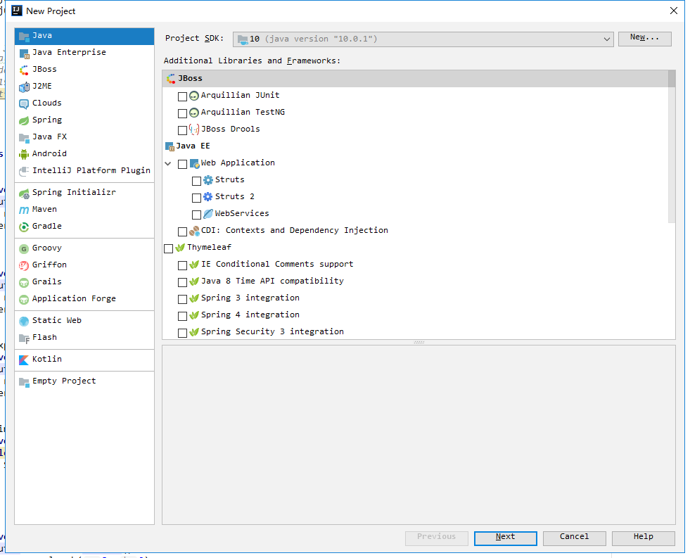
新建项目成功后，需要导入项目的依赖包(即junit包)。
右键项目根目录 - 选择
Open Module Settings- 点击项目Dependencies(依赖配置) - 点击窗口右侧的绿色+按键 - 选择第1项JARs or directories...；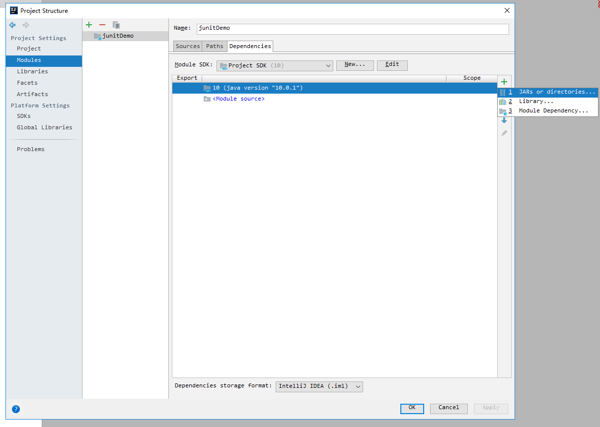
找到
IDEA安装目录/lib/目录，在该目录中找到junit-4.12.jar包，点击OK；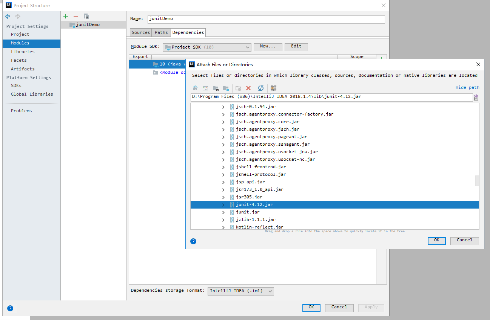
用同样的方式，导入
hamcrest-core-1.3.jar包(也在IDEA安装目录/lib/目录下)。junit4.12依赖于该包，若不导入该包，junit4运行则会报错。最终项目依赖列表如下：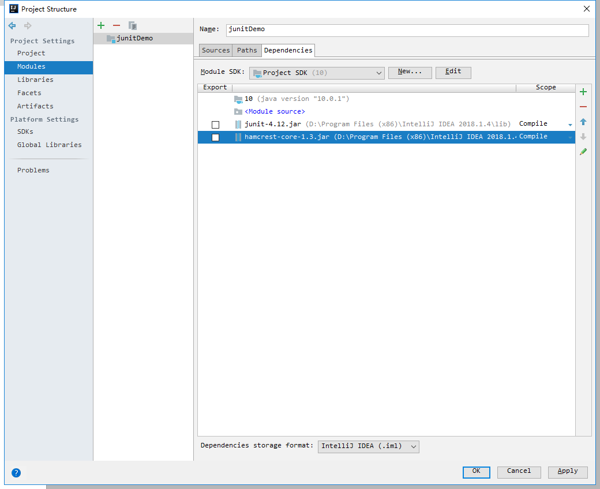
在项目
src/目录下新建main和test包(即目录)，也可以不新建，个人喜好。最终项目结构和外部依赖如下：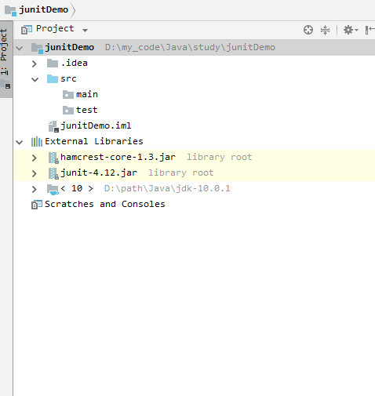
2. 开始
2.1. 编写计算器类，包含加减乘除四个函数
1 | public class Calculator { |
2.2. 编写测试类，使用断言
在test目录下，新建CalculatorTest测试类，内容如下：
1 | package test; |
junit中的断言：
assertEquals(): 如果比较的两个对象是相等的，此方法将正常返回；否则失败显示在JUnit的窗口测试将中止。assertSame()和assertNotSame(): 方法测试两个对象引用指向完全相同的对象。assertNull()和assertNotNull(): 方法测试一个变量是否为空或不为空(null)。assertTrue()和assertFalse(): 方法测试if条件或变量是true还是false。assertArrayEquals(): 将比较两个数组，如果它们相等，则该方法将继续进行不会发出错误。否则失败将显示在JUnit窗口和中止测试。
2.3. 编写出现Error和Failure的测试用例，并分析区别
正常测试
点击CalculatorTest测试类旁的绿色三角箭头，运行正确测试类，结果如下：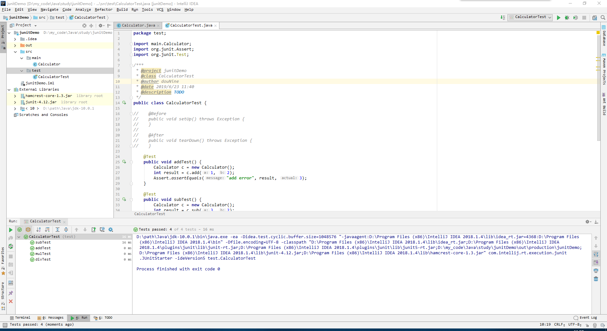
编写出现
Failure的测试用例修改
Calculator类的add()函数为：1
2
3public int add(int a, int b) {
return a - b;
}再次运行
CalculatorTest测试类，addTest()函数报错fail：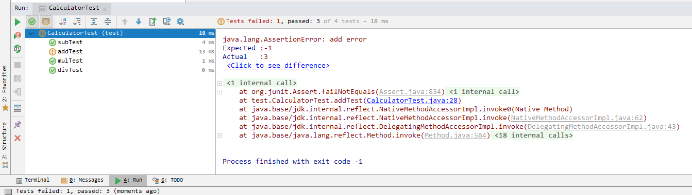
编写出现
Error的测试用例修改
CalculatorTest测试类的divTest()函数为：1
2
3
4
5
6
public void divTest() {
Calculator c = new Calculator();
int result = c.div(2, 0);
Assert.assertEquals("div error", result, 2);
}再次运行，出现
error错误。原因是测试数据中存在除0，导致被测试函数抛出异常：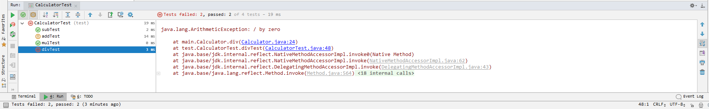
Error和Failure的区别
Error的出现是因为测试代码编写的问题，比如以上用例：未接受被测试程序“正常”抛出的异常。Failure的出现则说明被测试程序有问题，比如以上用例：add()函数错误地返回两数相减的结果。
2.4. junit执行过程
在CalculatorTest测试类中添加如下函数，并导入相应的包：
1 |
|
上述注解含义：
@BeforeClass表示该函数在所有测试函数运行之前运行；
@AfterClass表示该函数在所有测试函数运行之后运行；
@Before表示该函数在每个测试函数运行之前运行一次；
@After表示该函数在每个测试函数运行之后运行一次；
在每个测试函数中加一句输出，运行测试类结果如下：
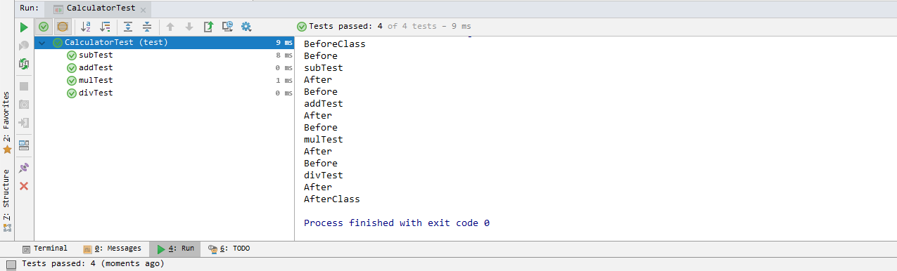
2.5. 异常测试、超时测试、忽略测试
异常测试
通过
@Test(expected = ArithmeticException.class)实现异常检测。对于上述
divTest()除0抛出异常的情况，进行异常接受测试，修改divTest()函数如下：1
2
3
4
5
6
7(expected = ArithmeticException.class)
public void divTest() {
System.out.println("divTest");
Calculator c = new Calculator();
int result = c.div(2, 0);
Assert.assertEquals("div error", result, 0);
}运行结果如下，未出现
Error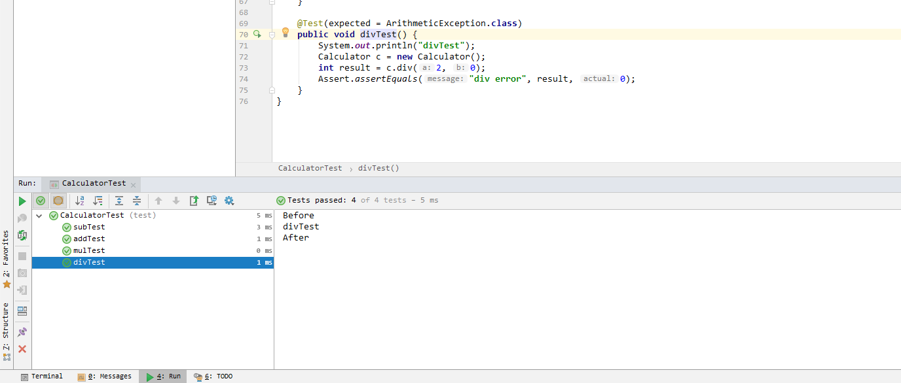
超时测试
通过
@Test(timeout = 2000)实现。在
CalculatorTest测试类中添加超时测试函数：1
2
3
4
5
6(timeout = 2000)
public void printTest() {
while (true) {
System.out.println("hello");
}
}该测试函数运行超过2000ms，则会报错
Error：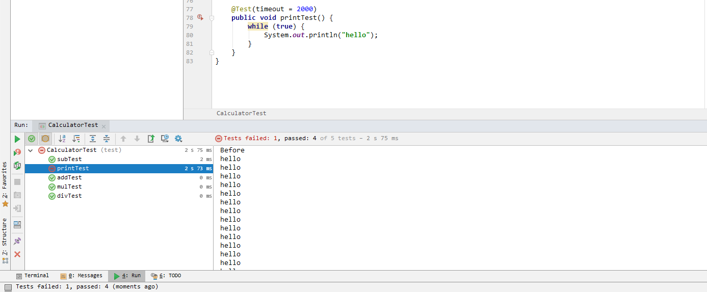
忽略测试
在
printTest()函数上添加@Ignore注解。运行则会忽略该函数：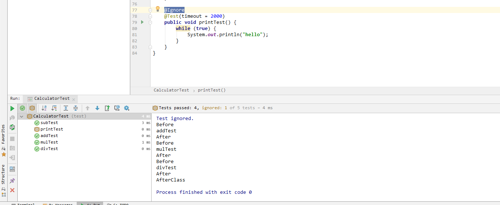
2.6. 参数化测试
1 | package test; |
参数化测试说明：
- 测试类需要使用
@RunWith(Parameterized.class)注解进行修饰。 - 测试类需要声明分别用于存放期望值和测试数据的变量。
- 测试类需要声明一个带有参数的公共构造函数，并在其中为第二个环节中声明的几个变量赋值。
- 测试类需要声明一个公共静态方法，使用`@Parameterized.Parameters
进行修饰，并返回java.util.Collection`类，并在此方法中初始化所有需要测试的参数对。 - 编写测试方法，使用类变量作为参数进行测试。
2.7. 同时运行多个测试类
同时运行CalculatorTest和ParameterTest测试类，例如：
1 | package test; |